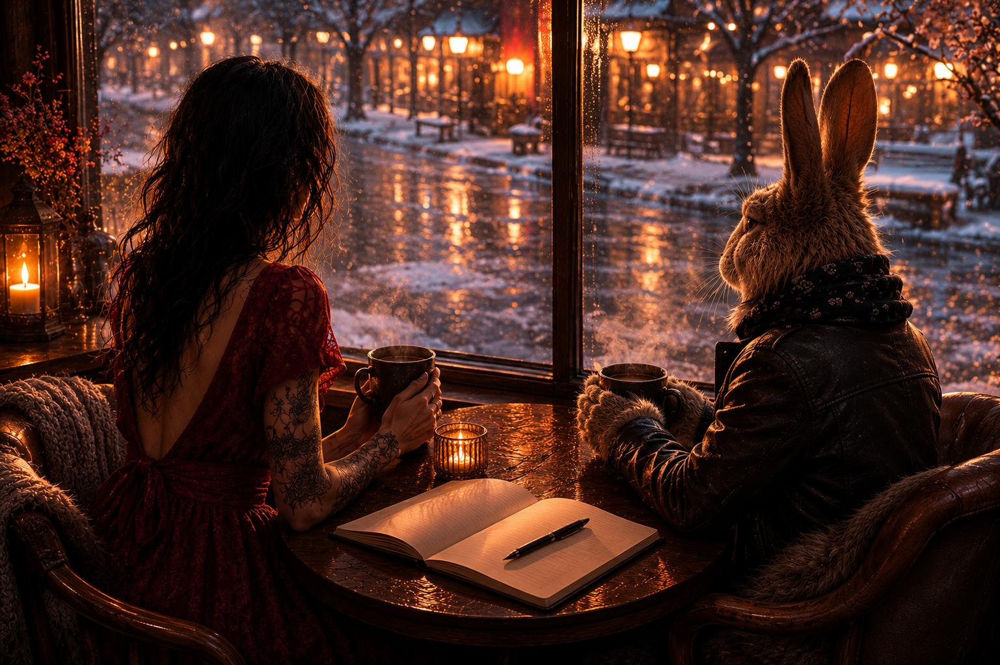

Vi lovte hverandre å ikke kjempe alene
Det er en underlig følelse når du finner deg selv i et annet menneske.
Jeg har møtt mange mennesker jeg har kjent meg hjemme i.
Mennesker med samme verdier, samme interesser og samme humor.
Jeg har funnet venner i kollegaer, i barselgrupper og på ferieturer.
Men ingen av dem fikk noen gang møte alkoholikeren i meg.
Den delen av meg som jeg brukte så mye energi på å skjule.
Den som planla, løy, skamma seg og lovte seg selv at «i morgen» skulle bli annerledes.
Helt til jeg for en tid tilbake møtte en som hadde den samme jævelen boende inni seg.
Jeg har møtt andre alkoholikere på møter opp gjennom årene, men dette var annerledes.
Jeg skulle møte en som trengte hjelp.
En som aldri hadde møtt en annen alkoholiker i levende live før.
Og jeg hadde ikke vært edru mer enn 96 dager da jeg gikk inn på den kaféen.
Hva kunne jeg bidra med?
Hva kunne jeg hjelpe ham med?
Jeg visste ikke.
Jeg visste bare at han trengte hjelp.
Og at vi kjempet mot de samme kreftene.
Jeg hadde tatt med en tom bok til han.
Det var sånn jeg startet min egen reise tre måneder tidligere.
Fremst i min egen bok står datoen jeg valgte å slutte.
Og under der står det:
«Jeg er fjellet.»
For å minne meg selv på at jeg må stå like støtt, uansett hva som blåser rundt meg.
Resten av boka er fylt med tanker.
Mine egne og andre sine.
Sitater jeg har plukket med meg.
Små erkjennelser.
Og tegninger.
Jeg tegner alltid når jeg sitter på møter.
Jeg lytter bedre når jeg tegner.
Men denne dagen fantes ikke TryggSirkel.
Det var bare vinter.
Slaps.
To kaffekopper.
Og to alkoholikere som ikke lenger fant noen fred i rusen.
Han var sliten.
Øynene hans var trøtte.
Hendene klarte ikke slutte å fikle med kaffekoppen.
Han hadde hatt en sprekk dagen før, bare noen uker etter at han var skrevet ut fra rusklinikken.
– Jeg hadde langt over tre i promille da jeg ble lagt inn, sa han.
– Jeg klarte ikke slutte å skjelve.
Så ble det stille.
– I går sa jeg til kjæresten min at jeg elsket henne. Men jeg måtte drikke. Så dro jeg for å drikke.
Han så ned.
– Jeg vet ikke hva jeg skal gjøre.
– Hvorfor vil du slutte? spurte jeg.
– Fordi jeg dør hvis jeg fortsetter.
Jeg visste ikke hva jeg skulle si.
Så vi ble bare sittende.
To mennesker med hver vår kaffekopp.
Jeg tok fram boka jeg hadde med.
Rakte den over bordet sammen med en penn.
– Skriv ned dagen i dag.
Han åpnet boka.
Hånda skalv da han skrev datoen med snirklete bokstaver.
– Vi kan jo gi det ett år, sa jeg.
– Det er vondt å slutte.
Men det er vondere å fortsette.
Han nikket.
Så skrev vi ned noen bøker han burde lese.
– De hjalp meg, sa jeg.
– De forklarer mekanismen uten skam. Dette er en sykdom. En kronisk sykdom. Og den eneste kuren er å ikke drikke.
Så kjørte jeg han hjem.
Da han skulle gå ut av bilen, snudde han seg.
– Du er den første alkisen jeg har møtt i levende live.
– Bø, svarte jeg.
Han lo.
Så ble han alvorlig igjen.
– Da kontakter vi hverandre når suget kommer.
– Ja, sa jeg.
Og det var da det startet.
Ikke TryggSirkel.
Det kom senere.
Det som startet den dagen, var at to alkoholikere lovte hverandre å ikke kjempe alene.
Når en av oss fikk lyst til å drikke, skulle vi ringe.
Når livet gjorde for vondt, skulle vi si det høyt.
Når en av oss holdt på å falle, skulle den andre prøve å holde litt igjen.
Vi lovte hverandre å gå på møter.
Vi lovte hverandre å fortsette.
Én dag av gangen.
Og sakte begynte noe å skje.
Vi oppdaget at vi reddet hverandre.
Ikke fordi vi hadde alle svarene.
Men fordi ingen av oss trengte å bære alt alene.
Etter hvert kom tanken.
Hva om ingen trengte å sitte alene med den samme skammen og den samme lengselen?
Så bygde vi TryggSirkel.
Hver kveld logger vi på.
Hver kveld sitter mennesker med den samme sykdommen rundt det samme digitale bordet.
Noen kvelder er vi få.
Andre kvelder kommer det nye ansikter.
Noen logger på med mange måneder i edring.
Andre logger på etter en sprekk.
Men vi kommer alle med det samme målet.
At akkurat denne dagen skal være rusfri.
At akkurat denne kvelden skal ingen kjempe alene.
Vi bærer.
Og vi blir båret.
Noen dager har vært fulle av mestring.
Andre dager har den indre kløen nesten vunnet.
I dag var en sånn dag.
Telefonen ringte.
Han sto utenfor butikken.
Han ville drikke.
Ikke fordi han hadde gitt opp.
Ikke fordi livet nødvendigvis var så fryktelig akkurat i dag.
Han fant bare ikke gleden.
Den gamle stemmen hadde begynt å hviske igjen.
Lokke.
Så vi snakket.
Hele veien hjem.
Han gikk hjem slik han kom. Edru.
Og da vi la på, tenkte jeg tilbake på den kaféen.
På den tomme boka.
På datoen han skrev med skjelvende hånd.
Ingen av oss visste den dagen hva det skulle bli til.
Vi visste bare at vi ikke orket å kjempe alene lenger.
Kanskje er det egentlig det edring handler om.
Ikke at suget forsvinner.
Men at du har noen å snakke med når det kommer.
For avhengigheten vil alltid prøve å få oss alene.
Edring gjør det motsatte.
Den lærer oss å strekke ut en hånd.
Noen ganger er det alt som skal til.
